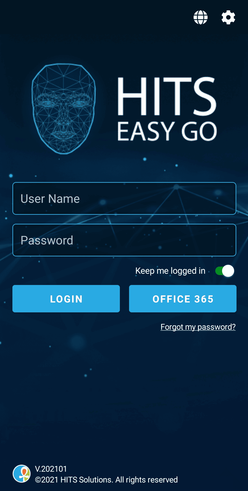

HR & Payroll · Mobile App
HITS HR & Payroll Mobile App
Cross-platform mobile app enabling employees to manage HR tasks on the go — payslips, leave requests, attendance, and real-time notifications.
Cross-platform mobile app enabling employees to manage HR tasks on the go — payslips, leave requests, attendance, and real-time notifications.

The HITS HR & Payroll mobile app is a comprehensive cross-platform solution that extends the HITS HCM platform to iOS and Android devices. It empowers employees and HR professionals to manage key HR tasks anytime, anywhere — from viewing payslips and requesting leave to tracking attendance and receiving real-time push notifications for important HR events and deadlines.
As lead mobile developer, I designed and implemented the app's architecture using Xamarin Forms to deliver a single codebase for both iOS and Android. I developed frontend and backend components, ensured a seamless cross-platform user experience, integrated REST APIs to sync with the web platform, and implemented push notifications for real-time HR alerts.
Securing sensitive employee and payroll data on mobile required encrypted local storage, secure API communication, and biometric authentication support.
Delivering a consistent, performant experience across iOS and Android devices with different screen sizes and OS versions required thorough testing and optimisation.
Ensuring key features remained accessible in low-connectivity environments required local caching and intelligent sync strategies.